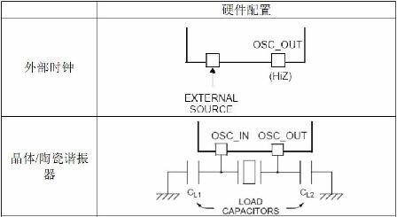
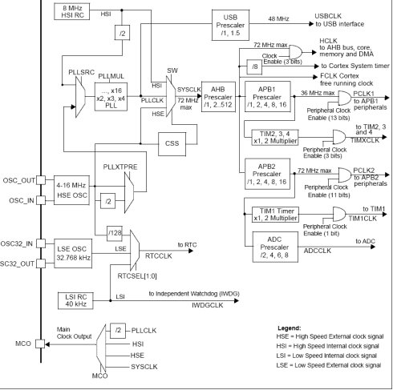

一、硬件上的连接问题
X
如果使用内部RC振荡器而不使用外部晶振，请按照如下方法处理：
1）对于100脚或144脚的产品，OSC_IN应接地，OSC_OUT应悬空。
2）对于少于100脚的产品，有2种接法：
i）OSC_IN和OSC_OUT分别通过10K电阻接地。此方法可提高EMC性能。
ii）分别重映射OSC_IN和OSC_OUT至PD0和PD1，再配置PD0和PD1为推挽输出并输出'0'。此方法可以减小功耗并(相对上面i)节省2个外部电阻。

STM32
时钟系统结构图
时钟是STM32单片机的脉搏，是单片机的驱动源。使用任何一个外设都必须打开相应的时钟。这样的好处就是，如果不使用一个外设的时候，就把它的时钟关掉，从而可以降低系统的功耗，达到节能，实现低功耗的效果。
STM32单片机的时钟可以由以下3个时钟源提供：
1、HSI:高速内部时钟信号STM32单片机内带的时钟 (8M频率), 精度较差
2、HSE:高速外部时钟信号，精度高。
来源：i. HSE外部晶体/陶瓷谐振器(晶振)；
ii.HSE用户外部时钟
3、LSE:低速外部晶体 32.768kHz 主要提供一个精确的时钟源 一般作为RTC时钟使用
STM32单片机的将时钟信号(例如HSE)经过分频或倍频(PLL)后,得到系统时钟，系统时钟经过分频，产生外设所使用的时钟。
上图为STM32整个时钟架构 。
为了便于更好了解STM32单片机的时钟，下面以HSE时钟的使用为例。
设置时钟流程：
1、将RCC寄存器重新设置为默认值 RCC_DeInit
2、打开外部高速时钟晶振HSE RCC_HSEConfig(RCC_HSE_ON);
3、等待外部高速时钟晶振工作 HSEStartUpStatus = RCC_WaitForHSEStartUp();
4、设置AHB时钟 RCC_HCLKConfig;
5、设置高速AHB时钟 RCC_PCLK2Config;
6、设置低速速AHB时钟 RCC_PCLK1Config
7、设置PLL RCC_PLLConfig
8、打开PLL RCC_PLLCmd(ENABLE);
9、等待PLL工作 while(RCC_GetFlagStatus(RCC_FLAG_PLLRDY) == RESET)
10、设置系统时钟 RCC_SYSCLKConfig
11、判断是否PLL是系统时钟 while(RCC_GetSYSCLKSource() != 0x08)
12、打开要使用的外设时钟
RCC_APB2PeriphClockCmd()/RCC_APB1PeriphClockCmd（）
在STM32中，有五个时钟源，为HSI、HSE、LSI、LSE、PLL。
HSI是高速内部时钟，RC振荡器，频率为8MHz。
HSE是高速外部时钟，可接石英/陶瓷谐振器，或者接外部时钟源，频率范围为4MHz~16MHz。
LSI是低速内部时钟，RC振荡器，频率为40kHz。
LSE是低速外部时钟，接频率为32.768kHz的石英晶体。
PLL为锁相环倍频输出，其时钟输入源可选择为HSI/2、HSE或者HSE/2。倍频可选择为2~16倍，但是其输出频率最大不得超过72MHz。
其中40kHz的LSI供独立看门狗IWDG使用，另外它还可以被选择为实时时钟RTC的时钟源。另外，实时时钟RTC的时钟源还可以选择LSE，或者是HSE的128分频。RTC的时钟源通过RTCSEL[1:0]来选择。
STM32中有一个全速功能的USB模块，其串行接口引擎需要一个频率为48MHz的时钟源。该时钟源只能从PLL输出端获取，可以选择为1.5分频或者1分频，也就是，当需要使用USB模块时，PLL必须使能，并且时钟频率配置为48MHz或72MHz。
另外，STM32还可以选择一个时钟信号输出到MCO脚(PA8)上，可以选择为PLL输出的2分频、HSI、HSE、或者系统时钟。
系统时钟SYSCLK，它是供STM32中绝大部分部件工作的时钟源。系统时钟可选择为PLL输出、HSI或者HSE。系统时钟最大频率为72MHz，它通过AHB分频器分频后送给各模块使用，AHB分频器可选择1、2、4、8、16、64、128、256、512分频。其中AHB分频器输出的时钟送给5大模块使用：
1）送给AHB总线、内核、内存和DMA使用的HCLK时钟。
2）通过8分频后送给Cortex的系统定时器时钟。
3）直接送给Cortex的空闲运行时钟FCLK。
4）送给APB1分频器。APB1分频器可选择1、2、4、8、16分频，其输出一路供APB1外设使用(PCLK1，最大频
率36MHz)，另一路送给定时器(Timer)2、3、4倍频器使用。该倍频器可选择1或者2倍频，时钟输出供定
时器2、3、4使用。
5）送给APB2分频器。APB2分频器可选择1、2、4、8、16分频，其输出一路供APB2外设使用(PCLK2，最大频
率72MHz)，另一路送给定时器(Timer1)倍频器使用。该倍频器可选择1或者2倍频，时钟输出供定时器1使
用。另外，APB2分频器还有一路输出供ADC分频器使用，分频后送给ADC模块使用。ADC分频器可选择为
2、4、6、8分频。
在以上的时钟输出中，有很多是带使能控制的，例如AHB总线时钟、内核时钟、各种APB1外设、APB2外设等等。当需要使用某模块时，记得一定要先使能对应的时钟。
需要注意的是定时器的倍频器，(定时器时钟之前有一个乘法器，它的操作不是由程序控制的，是由硬件根据前一级的APB预分频器的输出自动选择)当APB的分频为1时(这个乘法器无作用)，它的倍频值为1，否则它的倍频值就为2(即将APB预分频器输出的频率乘2，这样可以保证定时器可以得到最高的72MHz时钟脉冲)。
连接在APB1(低速外设)上的设备有：电源接口、备份接口、CAN、USB、I2C1、I2C2、UART2、UART3、SPI2、窗口看门狗、Timer2、Timer3、Timer4。注意USB模块虽然需要一个单独的48MHz时钟信号，但它应该不是供USB模块工作的时钟，而只是提供给串行接口引擎(SIE)使用的时钟。USB模块工作的时钟应该是由APB1提供的。
连接在APB2(高速外设)上的设备有：UART1、SPI1、Timer1、ADC1、ADC2、所有普通IO口(PA~PE)、第二功能IO口。
在单片机系统中，CPU和总线以及外设的时钟设置是非常重要的，因为没有时钟就没有时序，组合电路需要好好理解清楚。
准备知识：
片上总线标准种类繁多，而由ARM公司推出的AMBA片上总线受到了广大IP开发商和SoC系统集成者的青睐，已成为一种流行的工业标准片上结构。AMBA规范主要包括了AHB(Advanced
High performance Bus)系统总线和APB(Advanced Peripheral
Bus)外围总线。二者分别适用于高速与相对低速设备的连接。
由于时钟是一个由内而外的东西，具体设置要从寄存器开始。
RCC 寄存器结构，RCC_TypeDeff，在文件“stm 32f10x_map.h”中定义如下：
typedef struct
{
vu32 CR;
vu32 CFGR;
vu32 CIR;
vu32 APB2RSTR;
vu32APB1RSTR;
vu32 AHBENR;
vu32 APB2ENR;
vu32 APB1ENR;
vu32 BDCR;
vu32 CSR;
} RCC_TypeDef;
这些寄存器的具体定义和使用方式参见芯片手册，因为C语言的开发可以不和他们直接打交道，当然如果能够加以理解和记忆，无疑是百利而无一害。
如果外接晶振为8Mhz，最高工作频率为72Mhz，显然需要用PLL倍频9倍，这些设置都需要在初始化阶段完成。为了方便说明，以例程的RCC设置函数，并用中文注释的形式加以说明：
static void RCC_Config(void)
{
RCC_DeInit();
RCC_HSEConfig(RCC_HSE_ON);
HSEStartUpStatus = RCC_WaitForHSEStartUp();
if (HSEStartUpStatus == SUCCESS)
{
FLASH_PrefetchBufferCmd(FLASH_PrefetchBuffer_Enable);
FLASH_SetLatency(FLASH_Latency_2);
RCC_HCLKConfig(RCC_SYSCLK_Div1);
RCC_PCLK2Config(RCC_HCLK_Div1);
RCC_PCLK1Config(RCC_HCLK_Div2);
RCC_ADCCLKConfig(RCC_PCLK2_Div6);
//上面这句例程中缺失了，但却很关键
RCC_PLLConfig(RCC_PLLSource_HSE_Div1, RCC_PLLMul_9);
RCC_PLLCmd(ENABLE);
while (RCC_GetFlagStatus(RCC_FLAG_PLLRDY) == RESET)
{}
RCC_SYSCLKConfig(RCC_SYSCLKSource_PLLCLK);
while (RCC_GetSYSCLKSource() != 0x08)
{}
}r>//使能外围接口总线时钟，注意各外设的隶属情况，不同芯片的分配不同，到时候查手册就可以
RCC_AHBPeriphClockCmd(RCC_AHBPeriph_FSMC, ENABLE);
RCC_APB2PeriphClockCmd(RCC_APB2Periph_GPIOD | RCC_APB2Periph_GPIOE
|
RCC_APB2Periph_GPIOF | RCC_APB2Periph_GPIOG |
RCC_APB2Periph_AFIO, ENABLE);
}
由上述程序可以看出系统时钟的设定是比较复杂的，外设越多，需要考虑的因素就越多。同时这种设定也是有规律可循的，设定参数也是有顺序规范的，这是应用中应当注意的，例如PLL的设定需要在使能之前，一旦PLL使能后参数不可更改。
经过此番设置后，对于外置8Mhz晶振的情况下，系统时钟为72Mhz，高速总线和低速总线2都为72Mhz，低速总线1为36Mhz，ADC时钟为12Mhz，USB时钟经过1.5分频设置就可以实现48Mhz的数据传输。
一般性的时钟设置需要先考虑系统时钟的来源，是内部RC还是外部晶振还是外部的振荡器，是否需要PLL。然后考虑内部总线和外部总线，最后考虑外设的时钟信号。遵从先倍频作为CPU时钟，然后在由内向外分频，下级迁就上级的原则。